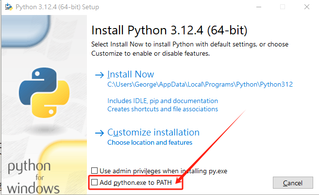
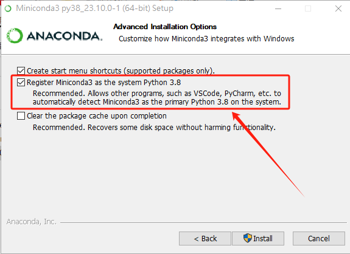

安装（python）注：更推荐直接安装使用anaconda¶
请到官网下载Python安装包：https://www.python.org/downloads/windows/
下载完毕后，右键->以管理员身份运行->是。

如果你不想手动配置环境变量，请勾选上图中的“添加python.exe到环境变量”。
其他步骤没啥技术含量。
安装（anaconda）¶
完整conda：
建议使用清华镜像站：https://mirrors.tuna.tsinghua.edu.cn/anaconda/archive/
请下载最新安装包！
miniconda：
建议使用清华镜像站：https://mirrors.tuna.tsinghua.edu.cn/anaconda/miniconda/
请下载最新安装包！
对于Windows用户：¶
安装时直接右键->以管理员身份运行->是。

如果你不想手动配置环境变量，请勾选上图中的“添加python.exe到环境变量”。
其他步骤没啥技术含量。
如果安装完毕使用出现错误，请参照下文“conda在windows Terminal中提示报错无法加载文件C:\XXX\WindowsPowerShell\profile.ps1”。笔者曾在2023年版本的anaconda遇到过这个问题。
使用pip报错“pip 不是内部或外部命令，也不是可运行的程序”¶
出现在“Miniconda3-py312_24.5.0-0-Windows-x86_64”版本。
请在系统环境变量中添加“%CONDA_HOME%\Scripts”。
pip下载库包报错：Defaulting to user installation because normal site-packages is not writeable¶
1、在使用pip下载库包的时候报错：Defaulting to user installation because normal site-packages is not writeable
2、错误解决方式：
查看了下anaconda的安装路径，查看目录属性，发现是只读属性，因此需要修改权限，或者使用管理员权限打开命令行，具体操作步骤：
1）修改目录权限属性
2）找到site.py文件：在命令行下输入：python -m site -help
site.py默认是在C:\ProgramData\miniconda3\Lib\site.py
然后打开site.py文件，把其中的：
USER_SITE = None USER_BASE = None
路径修改为自己的anaconda的安装路径即可：
USER_SITE = “C:\ProgramData\miniconda3\Lib\site-packages” USER_BASE = “C:\ProgramData\miniconda3\Scripts”
requests 使用代理报错 Cannot connect to proxy.‘,FileNotFoundError(2, ‘No such file or directory问题解决¶
如题，使用代理报错,降级urllib3 不要使用1.26.0版本，安装低版本。
pip install urllib3==1.25.11
requests 代理设置¶
import urllib3
urllib3.disable_warnings()
proxies={
'http': 'http://127.0.0.1:7890',
'https': 'https://127.0.0.1:7890'
}
result0=requests.get(url=url,proxies=proxies,verify=False)
conda在windows Terminal中提示报错无法加载文件C:\XXX\WindowsPowerShell\profile.ps1¶
提示 “无法加载文件C:\XXX\WindowsPowerShell\profile.ps1，因为在此系统上禁止运行脚本” 的错误。
以管理员身份运行
PowerShell；执行：
get-ExecutionPolicy，回复Restricted，表示状态是禁止的；执行：
set-ExecutionPolicy RemoteSigned，选择A即可。PS C:\WINDOWS\system32> get-ExecutionPolicy Restricted PS C:\WINDOWS\system32> set-ExecutionPolicy RemoteSigned 执行策略更改 执行策略可帮助你防止执行不信任的脚本。更改执行策略可能会产生安全风险，如 https:/go.microsoft.com/fwlink/?LinkID=135170 中的 about_Execution_Policies 帮助主题所述。是否要更改执行策略? [Y] 是(Y) [A] 全是(A) [N] 否(N) [L] 全否(L) [S] 暂停(S) [?] 帮助 (默认值为“N”): A PS C:\WINDOWS\system32>
python sql多线程¶
python中执行mysql查询时，需要使用线程池管理，不能直接使用pymysql，否则会报错。
conda activate py37
cd d:\d\code\github
git clone https://github.com/luvvien/pymysqlpool.git
cd pymysqlpool
python setup.py install
示例代码如下：
from concurrent.futures import ThreadPoolExecutor
import json
from pymysqlpool import ConnectionPool
import os
import logging
logging.basicConfig(format='%(asctime)s - %(pathname)s[line:%(lineno)d] - %(levelname)s: %(message)s', level=logging.INFO)
# 连接池配置
config = {
'pool_name': 'test',
'host':'127.0.0.1',
'port':3306,
'user':'root',
'password':'10203090',
'database':'tmp'
}
# 建立连接池
def connection_pool():
# Return a connection pool instance
pool = ConnectionPool(**config)
return pool
# 自定义的处理函数
def processFile(filepath):
logging.info("Current file: "+filepath)
with open(filepath,mode="r",encoding="utf-8") as f:
data=json.load(f)
for i in data:
tmp=i.keys()
try:
if "GH" in tmp:
GH=str(i["GH"])
else:
GH="NULL"
if "ZHZT" in tmp:
ZHZT=str(i["ZHZT"])
else:
ZHZT="NULL"
if "GJ" in tmp:
GJ=str(i["GJ"])
else:
GJ="NULL"
if "IDCARD" in tmp:
IDCARD=str(i["IDCARD"])
else:
IDCARD="NULL"
if "RYZT" in tmp:
RYZT=str(i["RYZT"])
else:
RYZT="NULL"
if "XB" in tmp:
XB=str(i["XB"])
else:
XB="NULL"
if "ZHJHZT" in tmp:
ZHJHZT=str(i["ZHJHZT"])
else:
ZHJHZT="NULL"
if "pageId" in tmp:
pageId=str(i["pageId"])
else:
pageId="NULL"
if "userId" in tmp:
userId=str(i["userId"])
else:
userId="NULL"
if "SFZJLXM" in tmp:
SFZJLXM=str(i["SFZJLXM"])
else:
SFZJLXM="NULL"
if "SFLBDM" in tmp:
SFLBDM=str(i["SFLBDM"])
else:
SFLBDM="NULL"
if "BMJZRYZT" in tmp:
BMJZRYZT=str(i["BMJZRYZT"])
else:
BMJZRYZT="NULL"
if "SMZT" in tmp:
SMZT=str(i["SMZT"])
else:
SMZT="NULL"
if "XM" in tmp:
XM=str(i["XM"])
else:
XM="NULL"
if "TYSFRZH" in tmp:
TYSFRZH=str(i["TYSFRZH"])
else:
TYSFRZH="NULL"
if "USERID_1" in tmp:
USERID_1=str(i["USERID_1"])
else:
USERID_1="NULL"
if "orgInfo" in tmp:
orgInfo=str(i["orgInfo"])
else:
orgInfo="NULL"
if "personId" in tmp:
personId=str(i["personId"])
else:
personId="NULL"
if "objectId" in tmp:
objectId=str(i["objectId"])
else:
objectId="NULL"
if "CQUBM" in tmp:
CQUBM=str(i["CQUBM"])
else:
CQUBM="NULL"
if "BMPYRYZT" in tmp:
BMPYRYZT=str(i["BMPYRYZT"])
else:
BMPYRYZT="NULL"
if "CSRQ" in tmp:
CSRQ=str(i["CSRQ"])
else:
CSRQ="NULL"
if "JZBM" in tmp:
JZBM=str(i["JZBM"])
else:
JZBM="NULL"
if "SFYDK" in tmp:
SFYDK=str(i["SFYDK"])
else:
SFYDK="NULL"
if "ZHJHSMZT" in tmp:
ZHJHSMZT=str(i["ZHJHSMZT"])
else:
ZHJHSMZT="NULL"
if "DQFWRYZT" in tmp:
DQFWRYZT=str(i["DQFWRYZT"])
else:
DQFWRYZT="NULL"
if "TEL" in tmp:
TEL=str(i["TEL"])
else:
TEL="NULL"
if "JZXGH" in tmp:
JZXGH=str(i["JZXGH"])
else:
JZXGH="NULL"
if "JZORACLECOLLECT" in tmp:
JZORACLECOLLECT=str(i["JZORACLECOLLECT"])
else:
JZORACLECOLLECT="NULL"
if "USERTYPE" in tmp:
USERTYPE=str(i["USERTYPE"])
else:
USERTYPE="NULL"
if "LASTLOGINTIME" in tmp:
LASTLOGINTIME=str(i["LASTLOGINTIME"])
else:
LASTLOGINTIME="NULL"
if "QYPYRYAZT" in tmp:
QYPYRYAZT=str(i["QYPYRYAZT"])
else:
QYPYRYAZT="NULL"
if "SFYXQJZ" in tmp:
SFYXQJZ=str(i["SFYXQJZ"])
else:
SFYXQJZ="NULL"
if "RSZPRYZT" in tmp:
RSZPRYZT=str(i["RSZPRYZT"])
else:
RSZPRYZT="NULL"
try:
with connection_pool().connection() as conn:
cursor = conn.cursor()
SQL="INSERT INTO `sso_v2` VALUES(\""+GH+"\",\""+ZHZT+"\",\""+GJ+"\",\""+IDCARD+"\",\""+RYZT+"\",\""+XB+"\",\""+ZHJHZT+"\",\""+pageId+"\",\""+userId+"\",\""+SFZJLXM+"\",\""+SFLBDM+"\",\""+BMJZRYZT+"\",\""+SMZT+"\",\""+XM+"\",\""+TYSFRZH+"\",\""+USERID_1+"\",\""+orgInfo+"\",\""+personId+"\",\""+objectId+"\",\""+CQUBM+"\",\""+BMPYRYZT+"\",\""+CSRQ+"\",\""+JZBM+"\",\""+SFYDK+"\",\""+ZHJHSMZT+"\",\""+DQFWRYZT+"\",\""+TEL+"\",\""+JZXGH+"\",\""+JZORACLECOLLECT+"\",\""+USERTYPE+"\",\""+LASTLOGINTIME+"\",\""+QYPYRYAZT+"\",\""+SFYXQJZ+"\",\""+RSZPRYZT+"\");"
logging.debug(SQL)
cursor.execute(SQL)
conn.commit()
except Exception as e:
logging.exception(e)
except Exception as e:
logging.exception(e)
#这里开到4线程，可以自行修改
MAX_THREAD_NUM = 4
threadCnt = 0
def processFilesInThreadPool():
jsonFiles = os.listdir("./data/")
logging.info("Json Files: " + str(jsonFiles))
#以下是多线程执行代码
global threadCnt
with ThreadPoolExecutor(max_workers=MAX_THREAD_NUM) as executor:
futures = []
for jsonFile in jsonFiles:
if threadCnt < MAX_THREAD_NUM:
threadCnt += 1
# 这里调用自定义的处理函数
future = executor.submit(processFile, "./data/" + jsonFile)
futures.append(future)
else:
# 等待当前所有线程完成
for future in futures:
future.result()
futures = []
threadCnt = 0
# 确保所有线程都完成
for future in futures:
future.result()
processFilesInThreadPool()